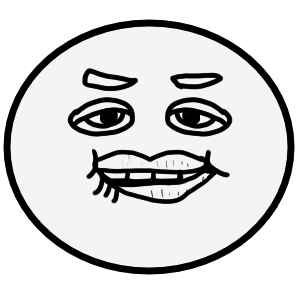

Excitado-Emoji

Excitado-Emoji
O "Excitado-Emoji" é o usado para questões mais pessoais que remetem a desejos da pessoa em si, cujo objetivo é demonstrar a outro pessoa que ela quer aquilo sem ser muito explícita.
Exemplo
Allan
Fernanda, você me chamou?
Fernanda
Sim Allan eu quero algo de você